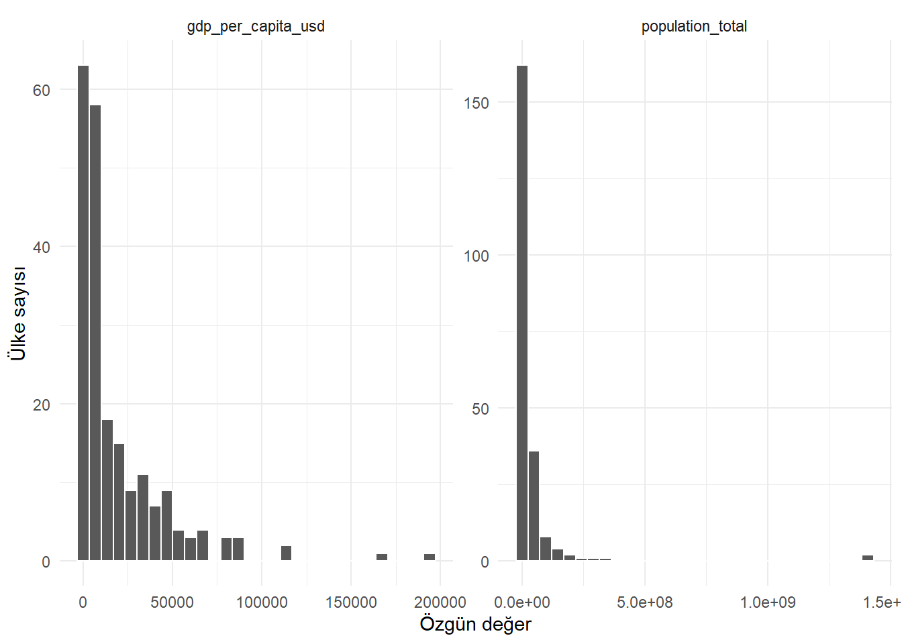
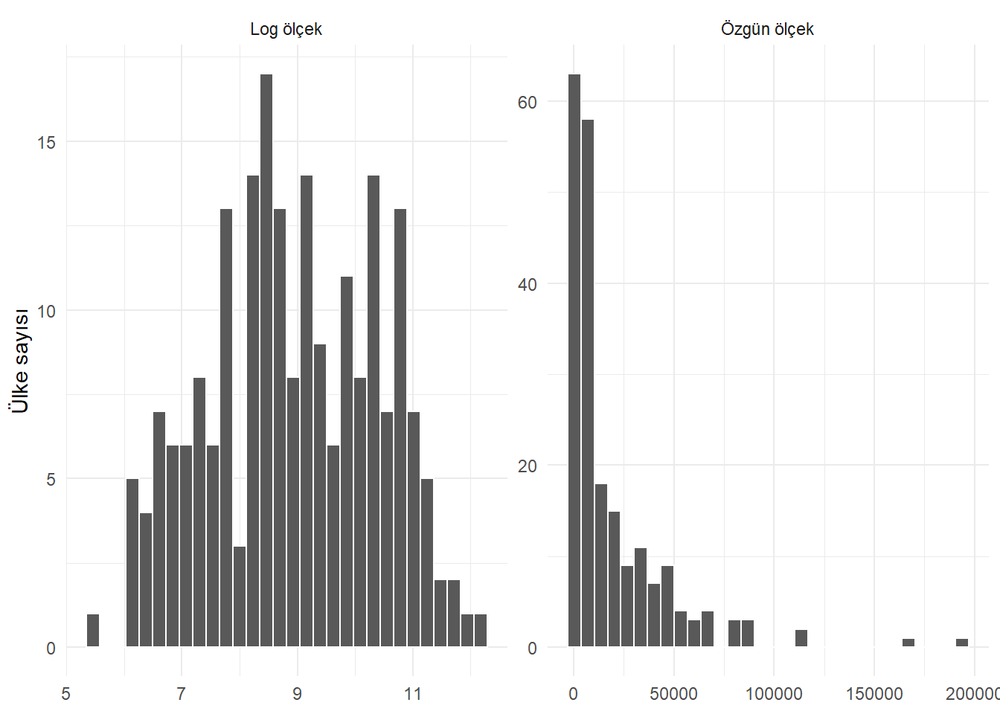
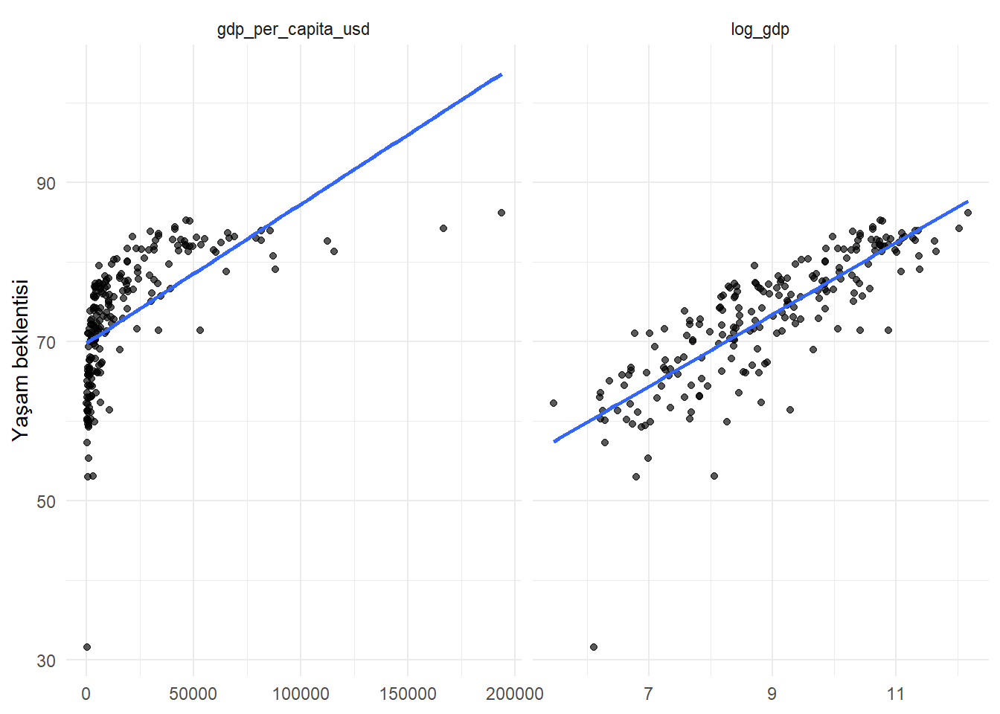
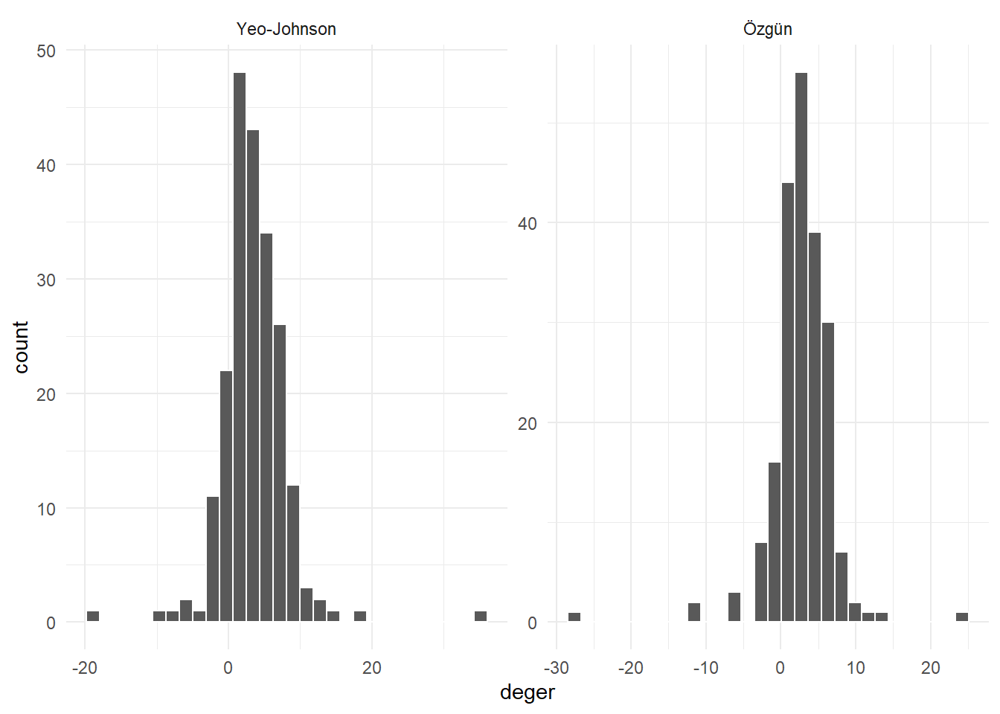
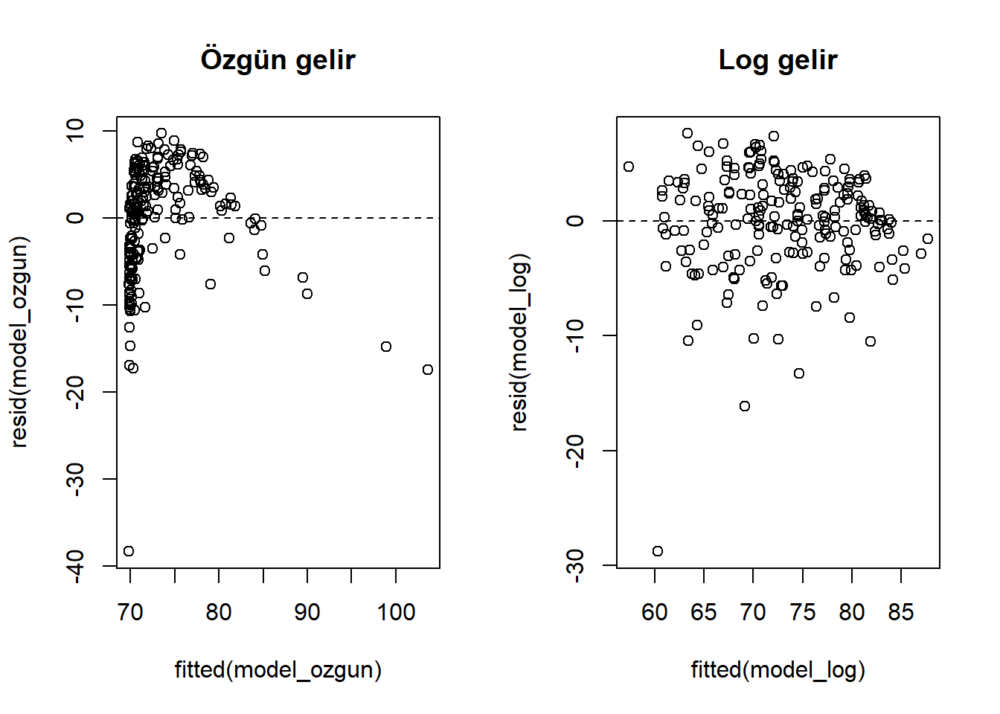

library(dplyr)
library(tidyr)
library(ggplot2)
countries <- readr::read_csv(
"data/countries.csv",
show_col_types = FALSE
)
indicator_dictionary <- readr::read_csv(
"data/indicator_dictionary.csv",
show_col_types = FALSE
)17 Veri Dönüşümleri
Bir veri değişkeni doğru ölçülmüş ve eksiksiz olabilir; yine de yapmak istediğimiz analiz için uygun bir biçimde temsil edilmiyor olabilir. Ülke nüfusu, GSYH, gelir, firma büyüklüğü ve emisyon gibi değişkenlerde birkaç gözlem diğerlerinden yüzlerce veya binlerce kat büyük olabilir. Bu durumda mutlak farklara dayalı özgün ölçek, verideki yapının yalnızca bir yönünü gösterir.
Veri dönüşümü, bir değişkenin her değerine belirli bir matematiksel işlev uygulayarak yeni bir temsil üretmektir:
\[ x_i^* = f(x_i) \]
Bir dönüşüm, gözlemler arasındaki karşılaştırmanın anlamını da değiştirir. (f) kesin artansa sıralama korunur: (x_i<x_j) ise (f(x_i)<f(x_j)). Ancak farklar ve uzaklıklar genellikle korunmaz. Logaritmada (1000-100=900) ile (100-10=90) farklı mutlak farklarken her ikisi de on katlık oranı temsil eder ve log ölçekte aynı uzaklığa dönüşür. Bu nedenle dönüşüm “aynı verinin yalnızca başka görünümü” değildir; modelin hangi farkları büyük, hangilerini küçük sayacağını belirler.
Dönüşümün gerekliliği değişkenin tek başına normal görünmesine indirgenemez. Doğrusal regresyonda normal dağılım varsayımı, yordayıcının marjinal dağılımı için değil, model koşullu artıklarının dağılımı için kullanılır. Benzer biçimde sabit varyans varsayımı da (X)’in değil, (Y)’nin (X) verildiğindeki saçılımıyla ilgilidir. Yordayıcıyı, sonucu veya her ikisini dönüştürmenin farklı bilimsel sorular üretebileceği bu yüzden gözden kaçırılmamalıdır (Gelman vd. 2020; Hastie vd. 2009).
Olasılık modeli kurulduğunda dönüşümün bir başka yönü daha vardır. Sürekli bir değişken (Y), (Z=f(Y)) biçiminde dönüştürülürse yoğunluk yalnızca yeni değerler yerine konularak elde edilmez; dönüşümün yerel sıkıştırma/genişletmesini gösteren Jacobian terimi de gerekir:
\[ p_Y(y)=p_Z\{f(y)\}\left|\frac{df(y)}{dy}\right|. \]
Box–Cox yönteminin () parametresini olabilirlikle seçerken bu terimi içermesinin nedeni budur. Basit grafik veya özellik üretiminde Jacobian’ı elle hesaplamayız; fakat dönüşümün istatistiksel modeli gerçekten değiştirdiğini anlamak için bu kuramsal bağlantı önemlidir.
Dönüşümün amacı veriyi “daha güzel” göstermek değildir. Amaç, analiz sorusuna göre şu ihtiyaçlardan birini karşılamak olabilir:
- çarpımsal farkları daha anlaşılır hale getirmek,
- sağa çarpık dağılımın büyük değerler tarafından baskılanmasını azaltmak,
- değişen varyansı daha dengeli hale getirmek,
- doğrusal olmayan bir ilişkiyi daha basit temsil etmek,
- model artıklarının varsayımlara daha uygun davranmasını sağlamak,
- sayısal hesaplamayı daha kararlı hale getirmek.
Bu bölümde dönüşümün neden, ne zaman ve nasıl kullanıldığını; özgün ölçekteki yorumun nasıl korunacağını ele alacağız.
ÖnemliDönüşüm bir veri düzeltmesi değildir
Logaritma almak yanlış bir değeri doğru yapmaz. Önce veri türü, birim, eksiklik ve olası hatalar kontrol edilir. Dönüşüm yalnızca geçerli değerlerin temsil biçimini değiştirir.
17.1 Proje Verisini Tanımak
Kişi başına GSYH göstergesinin birimini ve kaynağını veri sözlüğünden doğrulayalım.
indicator_dictionary |>
filter(indicator %in% c(
"gdp_per_capita_usd",
"population_total",
"co2_per_capita",
"gdp_growth_pct"
)) |>
select(indicator, unit, original_indicator, first_year, last_year)gdp_per_capita_usd cari ABD dolarıdır; zaman içindeki fiyat değişimini kendiliğinden düzeltmez. Bir matematiksel dönüşüm, göstergenin ekonomik tanımını değiştirmez ve enflasyon düzeltmesinin yerine geçmez.
17.2 Dönüşümden Önce Hangi Soruyu Soruyoruz?
Bir dönüşüme karar vermeden önce hedef açık olmalıdır.
Dağılımı mı anlamak istiyoruz?
Özgün ölçekteki histogram büyük ülkeler veya yüksek gelirli ekonomiler nedeniyle sıkışabilir. Log ölçek oranları daha görünür kılar.
Model ilişkisini mi düzeltmek istiyoruz?
Yaşam beklentisi ile kişi başına gelir arasındaki ilişki özgün ölçekte doğrusal değildir. Gelirin düşük düzeylerindeki artışlar daha büyük yaşam beklentisi farklarıyla, çok yüksek düzeylerindeki artışlar daha küçük farklarla ilişkili olabilir.
Varyansı mı dengelemek istiyoruz?
Bir sonuç değişkeninin düzeyi yükseldikçe saçılımı artıyorsa log veya güç dönüşümü değişen varyansı azaltabilir.
Yalnızca algoritmanın ölçek ihtiyacı mı var?
Amaç değişkenleri ortak büyüklüğe getirmekse dönüşüm yerine standardizasyon veya normalizasyon gerekebilir. Bu ayrımı Bölüm 18 bölümünde ele alacağız.
17.3 Çarpıklığı Ölçmek ve Görmek
Çarpıklık dağılımın simetriden hangi yönde ayrıldığını özetler. Öğretim amacıyla moment temelli örnek çarpıklık işlevi yazalım.
carpiklik <- function(x) {
x <- x[is.finite(x)]
merkez <- mean(x)
olcek <- sd(x)
mean(((x - merkez) / olcek)^3)
}
c(
nufus = carpiklik(countries$population_total),
kisi_basi_gsyh = carpiklik(countries$gdp_per_capita_usd),
yasam_beklentisi = carpiklik(countries$life_expectancy_total)
) nufus kisi_basi_gsyh yasam_beklentisi
8.7232197 2.8776688 -0.9377632 Pozitif değer sağa, negatif değer sola uzun kuyruğa işaret eder. Ancak tek bir sayı dağılımın çok tepeli, ayrık veya alt gruplardan oluşan yapısını göstermez; grafikle birlikte kullanılmalıdır.
countries |>
select(population_total, gdp_per_capita_usd) |>
pivot_longer(everything(), names_to = "gosterge", values_to = "deger") |>
ggplot(aes(x = deger)) +
geom_histogram(bins = 30, color = "white", na.rm = TRUE) +
facet_wrap(~ gosterge, scales = "free") +
labs(x = "Özgün değer", y = "Ülke sayısı") +
theme_minimal()
17.4 Logaritmik Dönüşüm
Logaritma büyük değerleri küçük değerlerden daha fazla sıkıştırır. Pozitif (x) için doğal logaritma:
\[ x^* = \log(x) \]
biçimindedir. Log ölçeğin temel özelliği mutlak farkları değil oranları öne çıkarmasıdır:
\[ \log(2x) - \log(x) = \log(2) \]
Başlangıç düzeyi ne olursa olsun iki katına çıkma log ölçekte aynı farkı üretir.
countries_log <- countries |>
mutate(
log_population = log(population_total),
log_gdp_per_capita = log(gdp_per_capita_usd)
)
c(
gdp_ozgun_carpiklik = carpiklik(countries$gdp_per_capita_usd),
gdp_log_carpiklik = carpiklik(countries_log$log_gdp_per_capita)
)gdp_ozgun_carpiklik gdp_log_carpiklik
2.87766883 -0.06277538 countries |>
transmute(
`Özgün ölçek` = gdp_per_capita_usd,
`Log ölçek` = log(gdp_per_capita_usd)
) |>
pivot_longer(everything(), names_to = "olcek", values_to = "deger") |>
ggplot(aes(x = deger)) +
geom_histogram(bins = 30, color = "white", na.rm = TRUE) +
facet_wrap(~ olcek, scales = "free") +
labs(x = NULL, y = "Ülke sayısı") +
theme_minimal()
Log dönüşümünden sonra dağılım daha simetrik görünebilir; fakat dönüşümün gerekçesi yalnızca normalliğe yaklaşmak değildir. Ülkeler arası gelir farklarını oran olarak düşünmek de içeriksel bir gerekçedir.
Logaritmanın tabanı
R’de:
log(x)doğal logaritmayı,log10(x)10 tabanındaki logaritmayı,log2(x)2 tabanındaki logaritmayı hesaplar.
Taban ölçeği sabit bir katsayıyla değiştirir. Grafik ekseninde “10 kat artış” yorumunu kolaylaştırmak için log10, istatistiksel modellemede doğal türev yorumları için log sık kullanılır. Kullanılan taban açıkça belirtilmelidir.
x <- c(1, 10, 100, 1000)
data.frame(
x,
dogal_log = log(x),
log10 = log10(x),
log2 = log2(x)
)17.5 Sıfır ve Negatif Değerler
log(0) negatif sonsuzdur; negatif sayıların gerçek sayılar içindeki logaritması tanımsızdır.
log(c(10, 1, 0))[1] 2.302585 0.000000 -Inflog1p()
Sıfır içeren sayım veya tutar değişkenlerinde:
\[ \log(1 + x) \]
kullanılabilir.
ornek_sayim <- c(0, 1, 5, 20, 100)
data.frame(
ozgun = ornek_sayim,
log1p = log1p(ornek_sayim)
)1 eklemek otomatik ve etkisiz bir ayrıntı değildir. Ölçü birimi değişirse “1”in göreli anlamı da değişir. Örneğin bir lira eklemek ile bir milyon dolar eklemek aynı değildir.
Sabit ekleyerek kaydırmak
Negatif değerlerde bütün seriye sabit ekleyip log almak mümkün görünür:
log(x - min(x) + 1)Fakat sonuç seçilen örneklemin minimumuna bağlı olur. Yeni veride daha küçük değer gelirse kural bozulabilir; ölçekteki oran yorumu da kaybolur. Negatif değerleri kabul eden Yeo–Johnson dönüşümü çoğu durumda daha sistematik bir alternatiftir.
17.6 Karekök Dönüşümü
Karekök dönüşümü:
\[ x^* = \sqrt{x} \]
özellikle sıfır veya pozitif sayımlarda logaritmadan daha ılımlı bir sıkıştırma sağlar.
ornek_sayim <- c(0, 1, 4, 9, 25, 100)
data.frame(
ozgun = ornek_sayim,
karekok = sqrt(ornek_sayim),
log1p = log1p(ornek_sayim)
)Poisson benzeri sayım süreçlerinde varyansı dengelemek için tarihsel olarak kullanılmıştır. Ancak modern genelleştirilmiş doğrusal modeller, sonucu dönüştürmek yerine uygun olasılık dağılımı ve bağlantı işleviyle doğrudan modelleyebilir.
17.7 Ters Dönüşüm
Ters dönüşüm:
\[ x^* = \frac{1}{x} \]
büyük değerleri güçlü biçimde sıkıştırır ve sıralamanın yönünü tersine çevirir. Sıfırda tanımsızdır ve katsayı yorumunu zorlaştırabilir.
Örneğin “birim zaman başına hız” ile “birim mesafe başına süre” arasında alan açısından anlamlı bir ters ilişki olabilir. Yalnızca çarpıklığı azaltmak için refleks olarak kullanılmamalıdır.
hiz <- c(20, 40, 80)
data.frame(
hiz,
birim_mesafe_suresi = 1 / hiz
)17.8 Güç Dönüşümleri
Box–Cox dönüşümü
Box–Cox ailesi pozitif değerler için bir güç parametresi () kullanır:
\[ x^{(\lambda)} = \begin{cases} \dfrac{x^\lambda - 1}{\lambda}, & \lambda \neq 0 \\ \log(x), & \lambda = 0 \end{cases} \]
Özel durumlar yaklaşık olarak şu dönüşümlere karşılık gelir:
| () | Yaklaşık dönüşüm |
|---|---|
| 1 | Dönüşüm yok |
| 0.5 | Karekök |
| 0 | Logaritma |
| -1 | Ters dönüşüm |
Box–Cox sıfır ve negatif değer kabul etmez. Box ve Cox’un özgün yaklaşımında (), dönüştürülmüş yanıt altında kurulan normal doğrusal modelin profil olabilirliğiyle seçilir (Box ve Cox 1964). Bu nedenle amaç yalnızca histogramı simetrikleştirmek değil, modelin ortalama-varyans yapısını daha uygun hale getirmektir. Parametre örneklemden tahmin edildiği için modelleme sürecinde yalnızca eğitim verisinden öğrenilmelidir.
Yeo–Johnson dönüşümü
Yeo–Johnson ailesi Box–Cox’a benzer; fakat sıfır ve negatif değerleri de tanımlar (Yeo ve Johnson 2000). Parçalı tanımı şöyledir:
\[ h_\lambda(x)= \begin{cases} \dfrac{(x+1)^\lambda-1}{\lambda}, & x\geq 0,\ \lambda\neq 0,\\ \log(x+1), & x\geq 0,\ \lambda=0,\\ -\dfrac{(-x+1)^{2-\lambda}-1}{2-\lambda}, & x<0,\ \lambda\neq 2,\\ -\log(-x+1), & x<0,\ \lambda=2. \end{cases} \]
Pozitif tarafta Box–Cox benzeri bir güç, negatif tarafta ise işareti ve sürekliliği koruyan karşılık kullanılır. (+1) kaydırması sıfırda tanımı mümkün kılar; buna karşın keyfî olarak bütün değerlere büyük bir sabit eklemekle aynı şey değildir. Bu özellik büyüme oranı gibi negatif olabilen göstergelerde kullanışlıdır.
recipes paketiyle GSYH büyüme oranı için parametreyi öğrenelim.
library(recipes)
buyume_verisi <- countries |>
select(country, gdp_growth_pct) |>
drop_na()
yj_tarifi <- recipe(~ gdp_growth_pct, data = buyume_verisi) |>
step_YeoJohnson(gdp_growth_pct)
yj_hazir <- prep(yj_tarifi, training = buyume_verisi)
buyume_yj <- bake(yj_hazir, new_data = buyume_verisi)
tidy(yj_hazir, number = 1)prep() dönüşüm parametresini verilen eğitim verisinden tahmin eder; bake() aynı parametreyi yeni veriye uygular (Kuhn vd. 2024).
c(
ozgun_carpiklik = carpiklik(buyume_verisi$gdp_growth_pct),
yj_carpiklik = carpiklik(buyume_yj$gdp_growth_pct)
)ozgun_carpiklik yj_carpiklik
-1.577436 1.113134 Tahmin edilen () değeri “gerçek” bir doğa sabiti değildir; seçilen veri ve hedef ölçüt altında uygun bulunan parametredir.
17.9 İlişkiyi Dönüştürmek
Yaşam beklentisi ile kişi başına gelirin ilişkisini özgün ve log gelir eksenlerinde karşılaştıralım.
countries |>
select(life_expectancy_total, gdp_per_capita_usd) |>
drop_na() |>
mutate(log_gdp = log(gdp_per_capita_usd)) |>
pivot_longer(
c(gdp_per_capita_usd, log_gdp),
names_to = "gelir_olcegi",
values_to = "gelir"
) |>
ggplot(aes(x = gelir, y = life_expectancy_total)) +
geom_point(alpha = 0.65) +
geom_smooth(method = "lm", se = FALSE) +
facet_wrap(~ gelir_olcegi, scales = "free_x") +
labs(x = NULL, y = "Yaşam beklentisi") +
theme_minimal()
Log gelirli gösterim doğrusal ilişkiye daha yakın olabilir. Bu gözlem tek başına nedensellik göstermez; yalnızca temsil biçiminin model yapısıyla daha uyumlu olduğunu düşündürür.
17.10 Model Katsayılarını Yorumlamak
Dönüşüm hangi tarafta olduğuna göre yorum değişir.
Sonuç değişkeni logaritmikse
\[ \log(Y) = \beta_0 + \beta_1 X \]
modelinde (X)’te bir birim artış, (Y)’de yaklaşık (100_1) yüzde değişimle ilişkilidir. Daha doğru yüzde değişim:
\[ 100(e^{\beta_1} - 1) \]
olarak hesaplanır.
Yordayıcı logaritmikse
\[ Y = \beta_0 + \beta_1 \log(X) \]
modelinde (X)’te yaklaşık %1 artış, (Y)’de yaklaşık (_1/100) birim değişimle ilişkilidir.
Her ikisi de logaritmikse
\[ \log(Y) = \beta_0 + \beta_1 \log(X) \]
modelinde (_1) bir esneklik olarak yorumlanır: (X)’te %1 artış, (Y)’de yaklaşık (_1)% değişimle ilişkilidir.
DikkatYaklaşık yorumun sınırı
100 * beta yaklaşımı küçük katsayılarda uygundur. Büyük katsayılarda 100 * (exp(beta) - 1) kullanılmalıdır. İlişki gözlemsel veriden geliyorsa “neden olur” yerine “ilişkilidir” denmelidir.
17.11 Geri Dönüşüm
Log ölçekte tahmin edilen değeri özgün ölçeğe taşımak için exp() kullanılır.
log_deger <- log(c(1000, 5000, 10000))
data.frame(
log_deger,
geri_donusmus = exp(log_deger)
)Ancak log sonuçlu bir modelde exp(tahmin), koşullu dağılımın medyanına karşılık gelebilir; aritmetik ortalamanın yansız tahmini olmak zorunda değildir. Artık varyansına bağlı yeniden dönüşüm yanlılığı değerlendirilmelidir. Yalnızca exp() uygulayıp “ortalama tahmin” demek her durumda doğru değildir.
17.12 Dönüşüm ve Standardizasyon Aynı Şey Değildir
Bir değişkenin logaritmasını almak dağılımın biçimini ve oranların temsilini değiştirir. Z-puanıyla standardize etmek ise merkezini sıfıra, standart sapmasını bire taşır; dağılımın temel biçimini korur.
gdp_gozlenen <- countries$gdp_per_capita_usd[
!is.na(countries$gdp_per_capita_usd)
]
data.frame(
ozgun_carpiklik = carpiklik(gdp_gozlenen),
standart_carpiklik = carpiklik(as.numeric(scale(gdp_gozlenen))),
log_carpiklik = carpiklik(log(gdp_gozlenen))
)Doğrusal standardizasyon çarpıklığı değiştirmez; log dönüşümü değiştirebilir.
17.13 Dönüşüm Kararını Değerlendirmek
Tek bir “en iyi” ölçüt yoktur. Aşağıdaki kontroller birlikte kullanılabilir:
- dönüşüm öncesi ve sonrası histogram/yoğunluk grafiği,
- yordayıcı–sonuç saçılım grafiği,
- model artıklarının yapısı,
- değişen varyansın azalması,
- çapraz doğrulama performansı,
- katsayı ve tahminlerin yorumlanabilirliği,
- yeni veride uygulanabilirlik,
- farklı makul dönüşümlere karşı sonuç duyarlılığı.
Normalliğin çoğu modelde ham değişken için değil, hata terimi veya örnekleme dağılımı için ilgili olduğu unutulmamalıdır.
17.14 Modelleme ve Veri Sızıntısı
Sabit log dönüşümü veriden parametre öğrenmez; aynı matematiksel kural eğitim ve test verisine uygulanabilir. Buna karşılık Box–Cox veya Yeo–Johnson için () örneklemden tahmin edilir.
Güvenli sıra:
- Eğitim ve test verisini ayır.
- Dönüşüm parametresini eğitim verisinde tahmin et.
- Eğitim verisini dönüştür.
- Aynı parametreyi test ve yeni veriye uygula.
Test verisinin çarpıklığına bakarak () seçmek veri sızıntısıdır.
17.15 Sık Yapılan Hatalar
Her çarpık değişkeni normalleştirmeye çalışmak
Çarpıklık bazen gerçek veri üretim sürecinin özelliğidir. Kullanılan yöntem ham değişkenin normal olmasını gerektirmeyebilir.
Log dönüşümünden önce sıfır ve negatifleri kontrol etmemek
Bu durum -Inf veya NaN üretir. Değerlerin anlamı incelenmeden keyfî sabit eklenmemelidir.
Log tabanını ve ölçüyü yazmamak
Doğal log ve log10 farklı sayısal katsayılar üretir. Rapor ve eksen etiketinde kullanılan dönüşüm belirtilmelidir.
Dönüşmüş katsayıyı özgün ölçekte yorumlamak
Log sonuç, log yordayıcı ve log–log modellerinin yorumları birbirinden farklıdır.
Dönüşümü aykırı değerleri saklamak için kullanmak
Dönüşüm gözlemleri sıkıştırır; olası veri hatalarını doğrulama gereğini ortadan kaldırmaz.
Box–Cox parametresini bütün veriden öğrenmek
Örneklemden tahmin edilen her parametre gibi () yalnızca eğitim verisinden öğrenilmelidir.
Geri dönüşüm yanlılığını unutmak
Log ölçekteki ortalamayı üs almak, özgün ölçekteki aritmetik ortalamayı her zaman vermez.
17.16 Egzersizler
Egzersiz 1
population_total, gdp_current_usd ve co2_per_capita değişkenleri için çarpıklık hesaplayın. Sonuçları histogramlarla karşılaştırın.
Egzersiz 2
Kişi başına GSYH için log(), log10() ve sqrt() dönüşümlerini uygulayın. Sıralamanın değişip değişmediğini kontrol edin.
Egzersiz 3
population_growth_pct değişkenine neden doğrudan log dönüşümü uygulanamayacağını gösterin.
Egzersiz 4
gdp_growth_pct için Yeo–Johnson dönüşümünün tahmin ettiği () değerini bulun ve dönüşüm öncesi/sonrası dağılımları çizin.
Egzersiz 5
Yaşam beklentisini kişi başına GSYH ve log kişi başına GSYH ile ayrı modellerde açıklayın. (R^2) ve artık grafiklerini karşılaştırın.
Egzersiz 6
log1p(x) ile log(x + 1) sonuçlarının aynı olduğunu sayısal örnekle gösterin. log1p() işlevinin küçük değerlerde hesaplama açısından neden özel olarak bulunduğunu araştırın.
Egzersiz 7
Bir log–log modelinde katsayı 0.35 ise ekonomik yorumunu yazın.
Egzersiz 8
Standardizasyonun çarpıklığı neden değiştirmediğini doğrusal dönüşüm üzerinden açıklayın.
Egzersiz 9
Box–Cox ile Yeo–Johnson arasındaki temel tanım alanı farkını açıklayın.
Egzersiz 10
Zaman içinde büyüyen bir göstergede dönüşüm parametresini 1960–2010 verisiyle öğrenip 2011–2019 dönemine uygulamak neden daha güvenli bir değerlendirme sağlar?
17.17 Egzersiz Çözümleri
Çözüm 1
countries |>
summarise(
across(
c(population_total, gdp_current_usd, co2_per_capita),
carpiklik
)
)Pozitif ve büyük değerler sağa çarpıklığı artırır. Histogram, bu sonucun birkaç gözlemden mi yoksa uzun bir kuyruktan mı geldiğini gösterir.
Çözüm 2
gdp_donusum <- countries |>
filter(!is.na(gdp_per_capita_usd)) |>
transmute(
country,
ozgun = gdp_per_capita_usd,
dogal_log = log(gdp_per_capita_usd),
log10 = log10(gdp_per_capita_usd),
karekok = sqrt(gdp_per_capita_usd)
)
all(order(gdp_donusum$ozgun) == order(gdp_donusum$dogal_log))[1] TRUEall(order(gdp_donusum$ozgun) == order(gdp_donusum$karekok))[1] TRUEBu dönüşümler pozitif alanda monoton artandır; sıralamayı korur, değerler arasındaki uzaklığı değiştirir.
Çözüm 3
range(countries$population_growth_pct, na.rm = TRUE)[1] -4.966942 4.893168log(countries$population_growth_pct[countries$population_growth_pct <= 0]) [1] NaN NaN NaN NaN NaN NaN NaN NaN NaN NaN NaN NaN NaN NaN NaN NaN NaN NaN NaN
[20] NaN NaN NaN NaN NaN NaN NaN NaN NaN NaN NaN NaN NaN NaN NaN NaN NaN NaN NaN
[39] NaN NaN NaNBüyüme oranı sıfır veya negatif olabilir. Doğal log bu değerlerde gerçek sayı üretmez.
Çözüm 4
bind_rows(
tibble(olcek = "Özgün", deger = buyume_verisi$gdp_growth_pct),
tibble(olcek = "Yeo-Johnson", deger = buyume_yj$gdp_growth_pct)
) |>
ggplot(aes(x = deger)) +
geom_histogram(bins = 30, color = "white") +
facet_wrap(~ olcek, scales = "free") +
theme_minimal()
tidy(yj_hazir, number = 1)GSYH büyüme oranının özgün ve Yeo–Johnson dönüşümlü dağılımı.
Çözüm 5
model_verisi <- countries |>
select(life_expectancy_total, gdp_per_capita_usd) |>
drop_na()
model_ozgun <- lm(
life_expectancy_total ~ gdp_per_capita_usd,
data = model_verisi
)
model_log <- lm(
life_expectancy_total ~ log(gdp_per_capita_usd),
data = model_verisi
)
c(
ozgun_r2 = summary(model_ozgun)$r.squared,
log_r2 = summary(model_log)$r.squared
) ozgun_r2 log_r2
0.3636669 0.6860989 par(mfrow = c(1, 2))
plot(fitted(model_ozgun), resid(model_ozgun), main = "Özgün gelir")
abline(h = 0, lty = 2)
plot(fitted(model_log), resid(model_log), main = "Log gelir")
abline(h = 0, lty = 2)
par(mfrow = c(1, 1))Karşılaştırma yalnızca (R^2) ile değil, artık yapısı ve içeriksel yorumla yapılmalıdır.
Çözüm 6
x <- c(0, 1e-12, 0.1, 1, 10)
all.equal(log1p(x), log(x + 1))[1] TRUElog1p() çok küçük x değerlerinde 1 + x toplamının yuvarlama kaybını azaltacak biçimde hesaplanır.
Çözüm 7
Diğer koşullar sabitken (X)’te %1 artış, (Y)’de yaklaşık %0.35 artışla ilişkilidir. Bu yorum nedensel değildir; model ilişkisidir.
Çözüm 8
Standardizasyon (z = (x - {x}) / s) biçiminde doğrusal bir dönüşümdür. Bütün merkezden sapmaları aynı pozitif sabite böler; dağılımın göreli biçimini ve dolayısıyla çarpıklığını değiştirmez.
Çözüm 9
Box–Cox kesin olarak pozitif değer gerektirir. Yeo–Johnson sıfır ve negatif değerleri de parçalı tanımıyla dönüştürebilir.
Çözüm 10
Gelecek dönemin dağılımı parametre seçimine katılmaz. Böylece 2011–2019 dönemi, geçmişten öğrenilen dönüşümün görülmemiş veride nasıl davrandığını daha gerçekçi gösterir.
17.18 Bölüm Özeti
Veri dönüşümü geçerli değerlerin temsilini değiştirir. Logaritma çarpımsal farkları öne çıkarır; karekök daha ılımlı sıkıştırma sağlar; ters dönüşüm yönü ve yorumu güçlü biçimde değiştirir. Box–Cox pozitif değerlerde, Yeo–Johnson ise sıfır ve negatif değerleri de kapsayacak biçimde güç parametresi öğrenir.
Dönüşüm kararı yalnızca çarpıklık sayısına dayanmaz. Dağılım, model ilişkisi, varyans, yorumlanabilirlik ve yeni veriye uygulanabilirlik birlikte değerlendirilir. Ham değişkenin normal olması çoğu yöntemin doğrudan varsayımı değildir.
Dönüşmüş katsayılar kullanılan matematiksel biçime göre yorumlanmalı; özgün ölçeğe dönüşte ortalama–medyan ve yeniden dönüşüm yanlılığı ayrımı korunmalıdır. Veriden öğrenilen dönüşüm parametreleri yalnızca eğitim verisinde tahmin edilmelidir.
17.19 Kaynaklar ve Ek Okuma
Güç dönüşümlerinin olabilirlik temelli kuruluşu için (Box ve Cox 1964), sıfır ve negatif değerleri kapsayan dönüşüm ailesi için (Yeo ve Johnson 2000) temel kaynaklardır. Dönüşümlerin regresyon varsayımları ve yorumla ilişkisi (Gelman vd. 2020; Hastie vd. 2009), R iş akışındaki uygulaması ise (Kuhn vd. 2024) ile birlikte okunabilir. Bölümde kullanılan göstergelerin kaynağı World Development Indicators’dır (World Bank 2026).